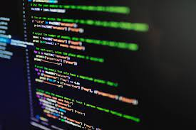

Microprocessadores, microcontroladores e a linguagem de programação Assembly
Hoje iremos conhecer peças importantes da indústria, entre elas os microprocessadores, microcontroladores e por final Linguagem de Programação Assembly peças que hoje são essenciais no meio da indústria para servidores assim sendo utilizado em todos os meios da indústria.
Linguagens de Programação
Neste site você verá especificamente sobre a linguagem de programação Assembly mas antes precisamos entender o que é uma linguagem de programação, Linguagem de programação é uma grande série de regras e sêmanticas, lembrando que hoje temos várias linguagens de programação como o assembly ja citado mas existes outras como o Java Script, Java, Cobol entre outras bem conhecidas e utilizadas para diferentes sites e aplicativos que utilizamos durante nosso dia. O computador consegue ler essa linguagem mostrando para que está acessando visto que uma pessoa que não estudou Desenvolvimento de sistema não irá conseguir ler o que precisa no site ou aplicativo.
Desenvolvedor
O primeiro trabalho que conhecemos sobre as linguagens de programação foi produzido por Ada Lovelace uma grande amiga do desenvolvedor da primeira calculadora programavel Grace Hopper e a primeira linguagem de programação leva seu nome a "ADA" , ela é considerada o berço das linguagens e dos computadores que temos, sendo uma pessoa muito importante para os microprocessadores e microprocessadores pois fazem a utilização da linguagem Assembly.